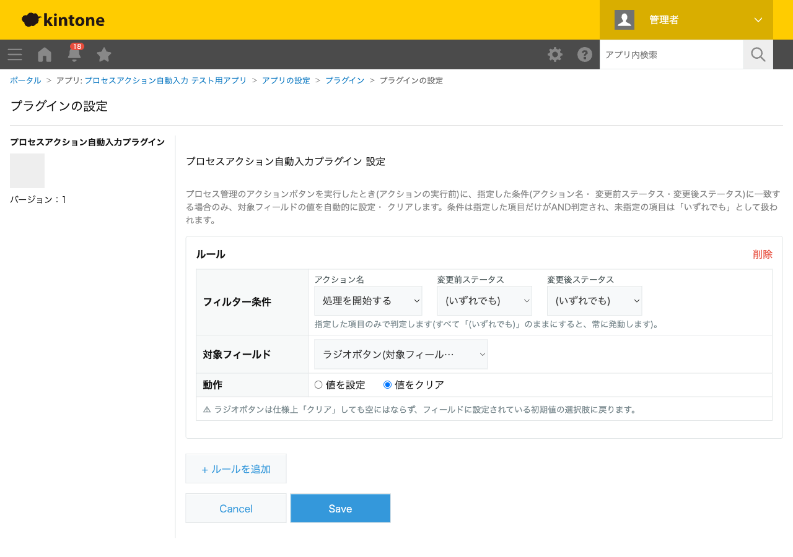

GovAppsプラグイン 安全性を確認できる無料kintoneプラグイン集
プロセス管理のアクションボタンを実行したとき(アクションの実行前)に、指定した条件(アクション名・ 変更前ステータス・変更後ステータス)に一致する場合のみ、対象フィールドの値を自動的に設定・ クリアするプラグインです。フィルター条件は同じ項目内で複数チェックすればいずれかに一致(OR)、 異なる項目間はすべて一致(AND)で判定します。日付/日時フィールドは実行時点だけでなく、 作成日時・更新日時・特定の日付/日時フィールドを基準に加減算できます。
「承認する」アクションを対象にしたルールを作り、承認日(DATE型)フィールドへ実行時点の日付を、承認者(ユーザー選択フィールド)へアクション実行者を自動設定できます。同じフィルター条件で複数のルールを組み合わせられるため、承認のたびに手入力していた記録作業をなくせます。
フィルター条件の「変更後ステータス」だけを絞り込んだルールを作ることで、特定のステータス遷移のときだけフィールドをクリアできます。前回の差し戻し理由が次の申請に残ってしまう、といった混乱を防げます。
日付/日時フィールドの基準に「作成日時」を選び、オフセットを「+3日」に設定すると、レコードが作成されてからの経過日数に応じた期限日を自動入力できます。基準は実行時点・作成日時・更新日時・特定の日付/日時フィールドから選べます。
フィルター条件は、同じ項目内で複数チェックするといずれかに一致(OR)、異なる項目間はすべて一致(AND)で判定されます。ラジオボタンフィールドへの「値をクリア」は、kintoneの仕様上、初期値に設定されている選択肢に戻ります(空にはなりません)。「特定の日付/日時フィールド」を基準にする場合、対象フィールドと同じ型(日付は日付、日時は日時)のみ選択できます。
kintoneセキュアコーディングガイドラインに沿って実装時にチェックしています。特に重要な点は次のとおりです。
kintone.app.getStatus())がプラグイン設定画面では使えないため、kintone自身への呼び出し専用の内部ラッパーkintone.api()経由でのみREST APIを呼び出します。生のfetch/XMLHttpRequestは使用しません。kintone.user.getOrganizations()を呼び出します(REST APIではありません)。innerHTMLではなくtextContentやDOM生成のみを使用しており、対象フィールドへの値書き込みもkintone標準のフィールド値としての代入のみでDOM操作は行いません。kintone.api()/kintone.user.getOrganizations()はログイン中のセッション情報を自動的に使用するため、認証情報をコード・設定に含めません。外部サーバーへの通信・外部ライブラリは一切使用していません。詳細な確認項目・確認日は下記GitHubのチェックリストに全項目を掲載しています。

設定画面を開いたときに、プロセス管理のプレビュー設定を取得するためkintone.api()による
REST API呼び出し(GET /k/v1/preview/app/status.json)を1回実行します。レコード詳細画面
でのアクション実行時は、通常は追加のAPI呼び出しを行いません。ただし「アクション実行者の優先する
組織」をソースに使うルールが1件でも一致した場合のみ、JavaScript APIの
kintone.user.getOrganizations()を1回実行します(REST APIの実行数には数えられません)。